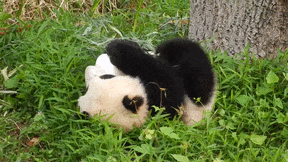
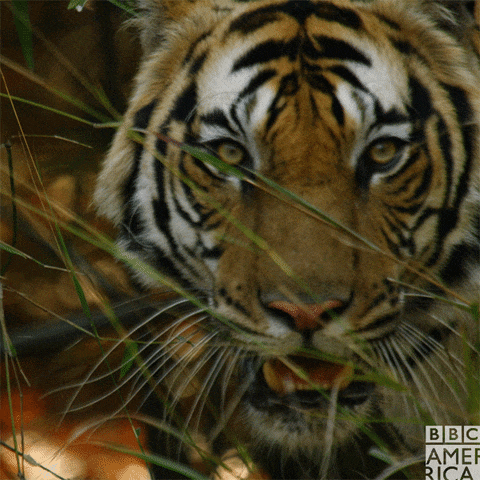
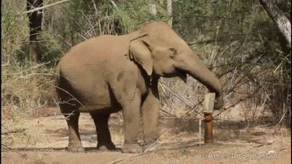

Liste des animaux les plus migons :
Panda géant
Le panda géant est volumineux et massif : il pèse de 80 à 125 kg, avec une moyenne de 105,5 kg ; il mesure de 1,50 à 1,80 mètre de longueur, avec une moyenne de 1,65 mètre5. Le panda est noir et blanc. Il est majoritairement constitué de blanc, avec les oreilles, les pattes et le contour des yeux noirs. Son pelage épais le protège du froid des régions de haute altitude où il vit.
Macaques Japonais

Il vit sur de nombreuses îles du Japon. C’est la plus septentrionale de toutes les espèces de macaques et même de primates, l’homme excepté. Il s’agit de la plus étudiée et de la mieux connue des espèces du genre. Le macaque du Japon s’est probablement différencié à partir des populations les plus orientales du macaque rhésus durant le pléistocène. Il a une longévité d'environ vingt ans.
Tigre du Bengale
Le tigre du Bengale est un félin, et la sous-espèce de tigre la plus connue. Également appelé tigre royal du Bengale, il est plus léger et moins costaud que le tigre de Sibérie. Sa population, d'environ 2 000 individus, est en constante diminution.
Éléphant d'Asie
L'éléphant d'Asie est un mammifère de la famille des éléphantidés. Il fait partie des espèces actuelles d'éléphants. Il est plus petit que ses cousins africains. Vivant en troupeau restreint mené par une femelle, il passe son temps à arpenter la forêt à la recherche de sources de nourriture pour satisfaire son régime herbivore.